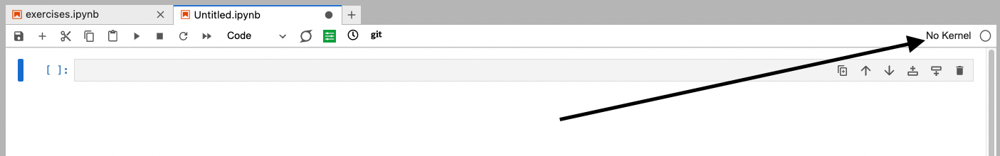
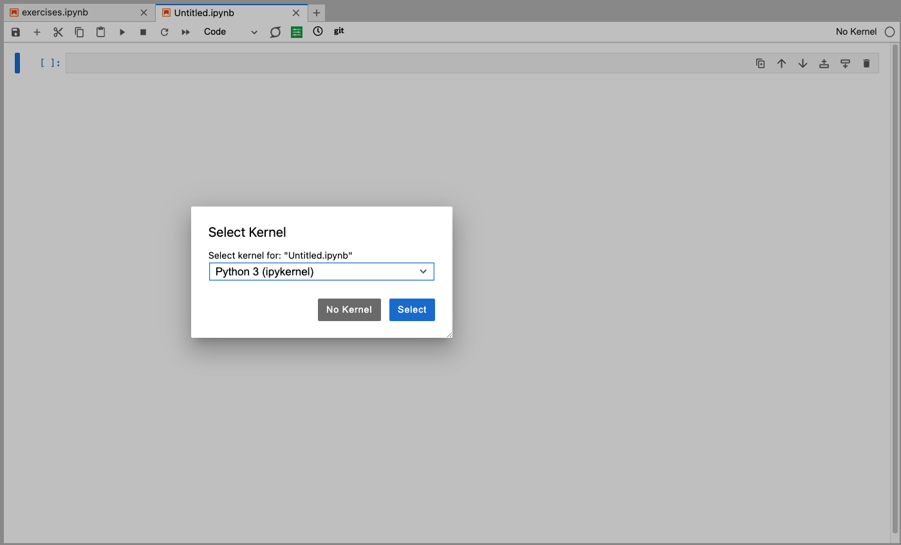
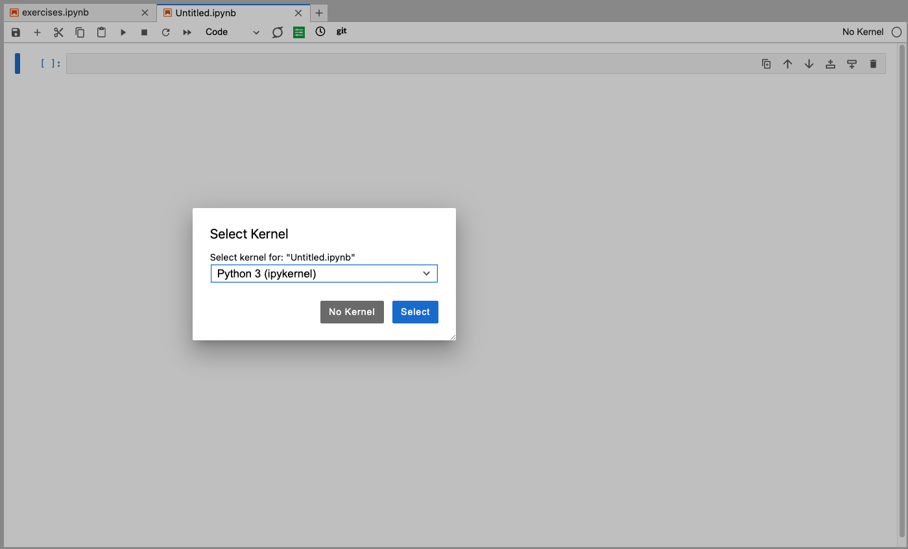
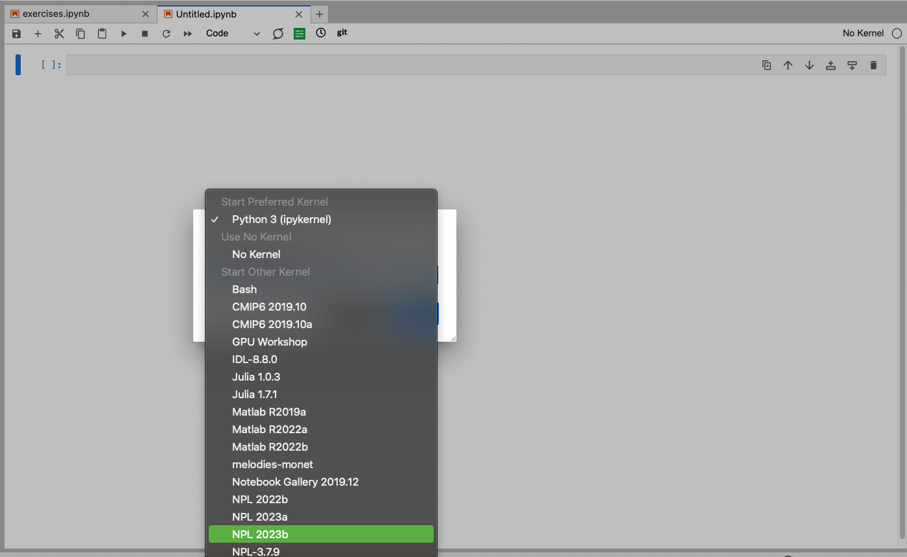
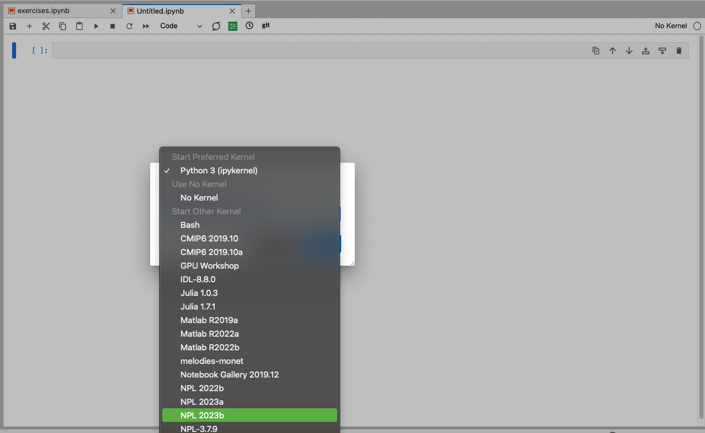

Exercises
Contents
Exercises#
Here are a couple exercises to get a different look at the ADF.
Make sure to change the kernel to NPL2023b

 

 


Exercise 1 - Plot Timeseries for RESTOM#
In this exercise you will try to run the ADF to make a single plot for time series data from your own case
Objectives:
Produce only time series files (no climo or regridded files)
Produce RESTOM from standard CAM output variables
Plot only the time series plot (no default ADF plots or tables)
Exercise 2 - Configure run-time yaml then run the ADF#
%matplotlib inline
import yaml
import os.path
from pathlib import Path
import sys
# Determine ADF directory path
# If it is in your cwd, set adf_path = local_path,
# otherwise set adf_path appropriately
local_path = os.path.abspath('')
#adf_path = "/glade/work/{user}/ADF"
adf_path = "/glade/work/richling/ADF/ADF"
print(f"current working directory = {local_path}")
print(f"ADF path = {adf_path}")
#set path to ADF lib
lib_path = os.path.join(adf_path,"lib")
print(f"The lib scripts live here, right? {lib_path}")
#set path to ADF plotting scripts directory
plotting_scripts_path = os.path.join(adf_path,"scripts","plotting")
print(f"The plotting scripts live here, right? {plotting_scripts_path}")
#Add paths to python path:
sys.path.append(lib_path)
sys.path.append(plotting_scripts_path)
#import ADF diagnostics object
from adf_diag import AdfDiag
current working directory = /glade/work/richling/ADF/ADF-Tutorial/notebooks/exercises
ADF path = /glade/work/richling/ADF/ADF
The lib scripts live here, right? /glade/work/richling/ADF/ADF/lib
The plotting scripts live here, right? /glade/work/richling/ADF/ADF/scripts/plotting
We can write the yaml outline in Python by putting it all into a string block """ """
As long as we stay consistent with the ADF ?????nomenclature?????? when it gets saved to a yaml, we can create a config run-time yaml file in Jupyter and run the ADF with it!
names_yaml = """
user: 'richling'
diag_basic_info:
diag_loc: /glade/scratch/${user}/ADF_output/TEST/
climo_loc: /glade/scratch/richling/ADF/tutorials/data/output/climos/
ts_loc: /glade/scratch/richling/ADF/tutorials/data/output/timeseries/
hist_str: cam.h0
#Is this a model vs observations comparison?
#If "false" or missing, then a model-model comparison is assumed:
compare_obs: false
#Generate HTML website (assumed false if missing):
#Note: The website files themselves will be located in the path
#specified by "cam_diag_plot_loc", under the "<diag_run>/website" subdirectory,
#where "<diag_run>" is the subdirectory created for this particular diagnostics run
#(usually "case_vs_obs_XXX" or "case_vs_baseline_XXX").
create_html: true
#Location of observational datasets:
#Note: this only matters if "compare_obs" is true and the path
#isn't specified in the variable defaults file.
obs_data_loc: /glade/work/nusbaume/SE_projects/model_diagnostics/ADF_obs
#Location where re-gridded and interpolated CAM climatology files are stored:
cam_regrid_loc: /glade/scratch/richling/ADF/tutorials/data/output/regrid/
#Overwrite CAM re-gridded files?
#If false, or missing, then regridding will be skipped for regridded variables
#that already exist in "cam_regrid_loc":
cam_overwrite_regrid: false
#Location where diagnostic plots are stored:
cam_diag_plot_loc: ${diag_loc}diag-plot/
#Use default variable plot settings?
#If "true", then variable-specific plotting attributes as defined in
#ADF/lib/adf_variable_defaults.yaml will be used:
use_defaults: true
#Location of ADF variable plotting defaults YAML file
#if not using the one in ADF/lib:
# defaults_file: /some/path/to/defaults/file
plot_press_levels: [200,850]
central_longitude: 180
weight_season: True
num_procs: 8
#redo_plot: false
#This second set of variables provides info for the CAM simulation(s) being diagnosed:
diag_cam_climo:
#Calculate climatologies?
#If false, neither the climatology or time-series files will be created:
calc_cam_climo: true
#Overwrite CAM climatology files?
#If false, or not prsent, then already existing climatology files will be skipped:
cam_overwrite_climo: false
cam_case_name: f.cam6_3_106.FLTHIST_v0a.ne30.dcs_effgw_rdg.001
case_nickname: ${diag_cam_climo.cam_case_name}
#Location of CAM history (h0) files:
cam_hist_loc: /glade/scratch/richling/ADF/tutorials/data/${diag_cam_climo.cam_case_name}/
#Location of CAM climatologies (to be created and then used by this script)
cam_climo_loc: ${climo_loc}${diag_cam_climo.cam_case_name}/
start_year: 2001
end_year: 2005
#Do time series files need to be generated?
#If True, then diagnostics assumes that model files are already time series.
#If False, or if simply not present, then diagnostics will attempt to create
#time series files from history (time-slice) files:
cam_ts_done: false
#Save interim time series files?
#WARNING: This can take up a significant amount of space,
# but will save processing time the next time
cam_ts_save: true
#Overwrite time series files, if found?
#If set to false, then time series creation will be skipped if files are found:
cam_overwrite_ts: false
#Location where time series files are (or will be) stored:
cam_ts_loc: ${ts_loc}${diag_cam_climo.cam_case_name}/
#This only matters if "compare_obs" is false:
diag_cam_baseline_climo:
#Calculate cam baseline climatologies?
#If false, neither the climatology or time-series files will be created:
calc_cam_climo: true
#Overwrite CAM climatology files?
#If false, or not present, then already existing climatology files will be skipped:
cam_overwrite_climo: false
cam_case_name: f.cam6_3_106.FLTHIST_v0a.ne30.dcs_non-ogw.001
case_nickname: ${diag_cam_baseline_climo.cam_case_name}
#Location of CAM baseline history (h0) files:
cam_hist_loc: /glade/scratch/richling/ADF/tutorials/data/${diag_cam_baseline_climo.cam_case_name}/
#Location of baseline CAM climatologies:
cam_climo_loc: ${climo_loc}${diag_cam_baseline_climo.cam_case_name}/
start_year: 2001
end_year: 2005
#Do time series files need to be generated?
#If True, then diagnostics assumes that model files are already time series.
#If False, or if simply not present, then diagnostics will attempt to create
#time series files from history (time-slice) files:
cam_ts_done: false
#Save interim time series files for baseline run?
#WARNING: This can take up a significant amount of space:
cam_ts_save: true
#Overwrite baseline time series files, if found?
#If set to false, then time series creation will be skipped if files are found:
cam_overwrite_ts: false
#Location where time series files are (or will be) stored:
cam_ts_loc: ${ts_loc}${diag_cam_baseline_climo.cam_case_name}/
time_averaging_scripts:
- create_climo_files
regridding_scripts:
- regrid_and_vert_interp
analysis_scripts:
- amwg_table
plotting_scripts:
- global_latlon_map
- zonal_mean
#List of CAM variables that will be processesd:
#If CVDP is to be run PSL, TREFHT, TS and PRECT (or PRECC and PRECL) should be listed
diag_var_list:
- FLNT
- FSNT
- LWCF
- PBLH
- PS
- PSL
- Q
- RELHUM
- SST
- SWCF
- T
- TS
- U
"""
config_file = '../../config_files/custom_config.yaml'
print(open(config_file).read())
analysis_scripts:
- amwg_table
diag_basic_info:
cam_diag_plot_loc: ${diag_loc}diag-plot/
cam_overwrite_regrid: false
cam_regrid_loc: /glade/scratch/richling/ADF/tutorials/data/output/regrid/
central_longitude: 180
climo_loc: /glade/scratch/richling/ADF/tutorials/data/output/climos/
compare_obs: false
create_html: true
diag_loc: /glade/scratch/${user}/ADF_output/TEST/
hist_str: cam.h0
num_procs: 8
obs_data_loc: /glade/work/nusbaume/SE_projects/model_diagnostics/ADF_obs
plot_press_levels:
- 200
- 850
ts_loc: /glade/scratch/richling/ADF/tutorials/data/output/timeseries/
use_defaults: true
weight_season: true
diag_cam_baseline_climo:
calc_cam_climo: true
cam_case_name: f.cam6_3_106.FLTHIST_v0a.ne30.dcs_non-ogw.001
cam_climo_loc: ${climo_loc}${diag_cam_baseline_climo.cam_case_name}/
cam_hist_loc: /glade/scratch/richling/ADF/tutorials/data/${diag_cam_baseline_climo.cam_case_name}/
cam_overwrite_climo: false
cam_overwrite_ts: false
cam_ts_done: false
cam_ts_loc: ${ts_loc}${diag_cam_baseline_climo.cam_case_name}/
cam_ts_save: true
case_nickname: ${diag_cam_baseline_climo.cam_case_name}
end_year: 2005
start_year: 2001
diag_cam_climo:
calc_cam_climo: true
cam_case_name: f.cam6_3_106.FLTHIST_v0a.ne30.dcs_effgw_rdg.001
cam_climo_loc: ${climo_loc}${diag_cam_climo.cam_case_name}/
cam_hist_loc: /glade/scratch/richling/ADF/tutorials/data/${diag_cam_climo.cam_case_name}/
cam_overwrite_climo: false
cam_overwrite_ts: false
cam_ts_done: false
cam_ts_loc: ${ts_loc}${diag_cam_climo.cam_case_name}/
cam_ts_save: true
case_nickname: ${diag_cam_climo.cam_case_name}
end_year: 2005
start_year: 2001
diag_var_list:
- FLNT
- FSNT
- LWCF
- PBLH
- PS
- PSL
- Q
- RELHUM
- SST
- SWCF
- T
- TS
- U
plotting_scripts:
- global_latlon_map
- zonal_mean
regridding_scripts:
- regrid_and_vert_interp
time_averaging_scripts:
- create_climo_files
user: richling
adf = AdfDiag(config_file)
%%time
#Create model time series.
adf.create_time_series()
Generating CAM time series files...
Processing time series for case 'f.cam6_3_106.FLTHIST_v0a.ne30.dcs_effgw_rdg.001' :
- time series for FLNT
- time series for FSNT
- time series for LWCF
- time series for PBLH
- time series for PS
- time series for PSL
- time series for Q
Adding PS to file
- time series for RELHUM
Adding PS to file
- time series for SST
- time series for SWCF
- time series for T
Adding PS to file
- time series for TS
- time series for U
Adding PS to file
- time series for OCNFRAC
...CAM time series file generation has finished successfully.
CPU times: user 1.29 s, sys: 255 ms, total: 1.55 s
Wall time: 16.6 s